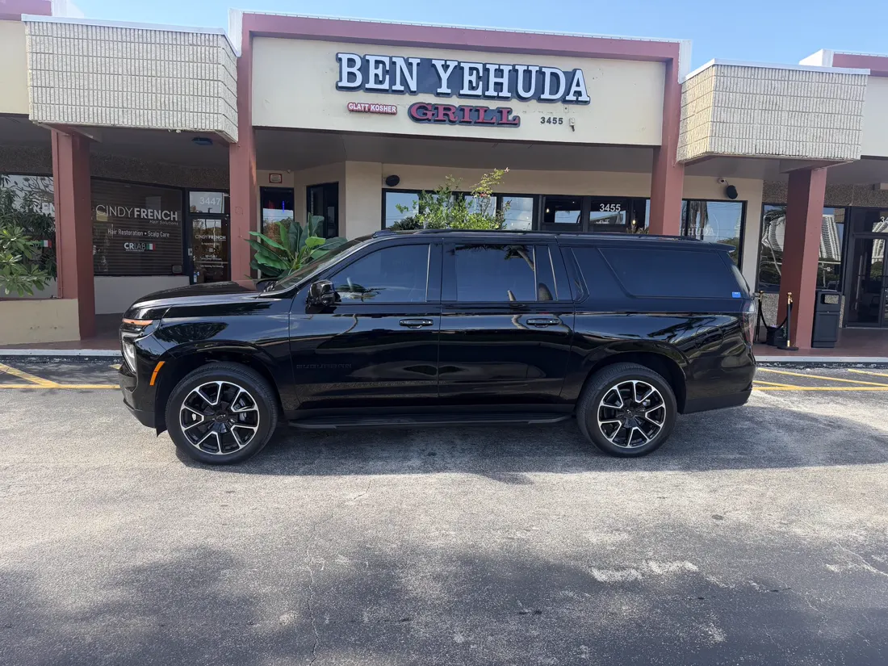

Miami Beach, FL
Miami Beach is an island reached by several causeways. Which one is right depends on where you're starting and what time it is — Onyx checks conditions before dispatch.
+1 786 931 ONYX (6699) · Licensed & insured · Miami-Dade Permit #64666 · D-U-N-S® 13-860-0693
Miami Beach covers three distinct stretches — South Beach, Mid-Beach, and North Beach — and Onyx treats them as three different jobs rather than one address. Hotel guests and residents in each stretch are reached by a different causeway, and event-day traffic hits the causeways unevenly depending on which fair, game, or show is drawing crowds that week.
South Beach sits at the southern tip, reached most directly by the MacArthur Causeway from Downtown Miami. Mid-Beach, centered around 41st Street, is reached by the Julia Tuttle Causeway, which runs closest to I-95. North Beach connects via the 79th Street Causeway. The Broad Causeway is a separate crossing further north that lands in Bay Harbor Islands, not directly in Miami Beach — reaching North Beach from that direction means continuing south through Surfside and Bal Harbour on local streets.
Miami International (MIA) is the standard choice for most of Miami Beach. The Julia Tuttle Causeway and I-95 form the most direct route from Mid-Beach; from South Beach, the route depends on the exact address and traffic and may run via the MacArthur Causeway and I-395 instead. Fort Lauderdale-Hollywood (FLL) is a longer trip north, more relevant for North Beach pickups than South Beach ones. President Donald J. Trump International Airport (DJT, formerly PBI) is a longer trip still, reserved for a specific route.
Hotel arrivals and departures across all three stretches, event transportation for galas, conferences, and fairs, and airport transfers make up most bookings. During Art Basel and Miami Art Week, fair-to-fair and hotel-to-fair trips add a layer of scheduling that a single causeway crossing doesn't capture — see the Art Basel page for that detail.
Fisher Island, off the southern tip of Miami Beach, is reached by a separate car ferry rather than any causeway. A trip there would need to be coordinated with the ferry schedule rather than treated as a standard Miami Beach pickup.

An approved chauffeur and vehicle can be confirmed for a South Beach hotel arrival in the morning and a Mid-Beach dinner run that evening, routed by whichever causeway is actually moving. Seating for up to six passengers. Luggage capacity depends on passenger count, suitcase dimensions, child seats, strollers, golf bags, and whether every seating row is required — confirmed before booking, whether it's a hotel check-in or an airport departure.
Call or message with your hotel or address — routed by causeway, not guesswork.